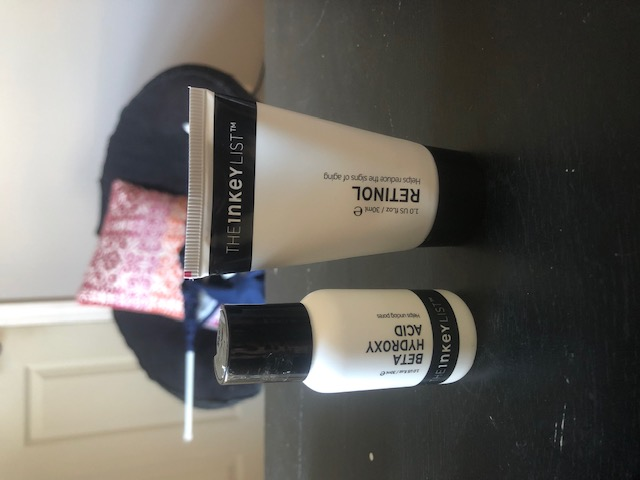
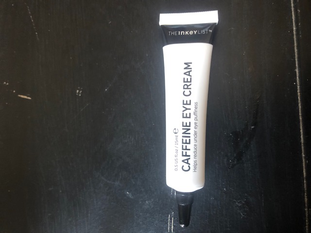
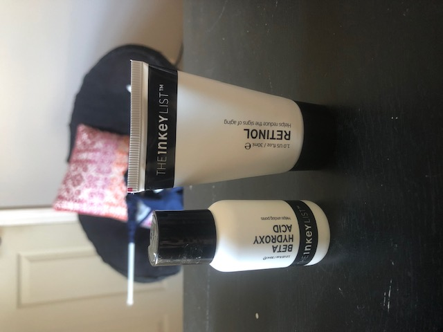
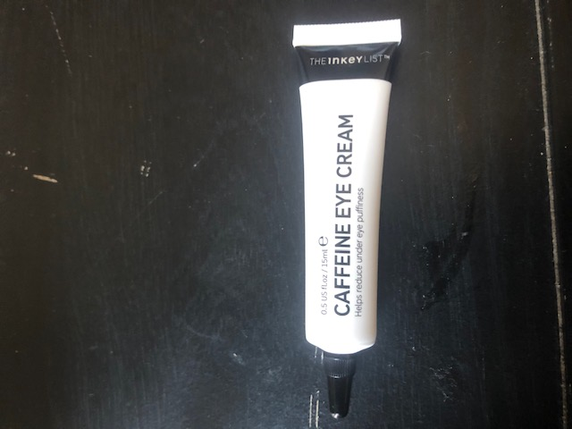
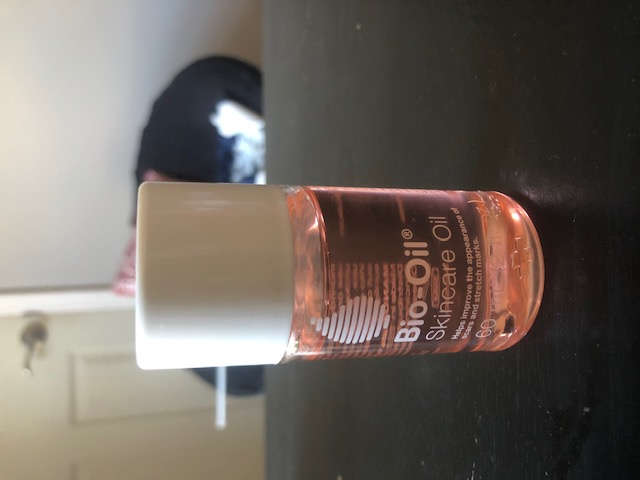
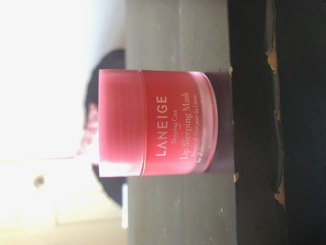
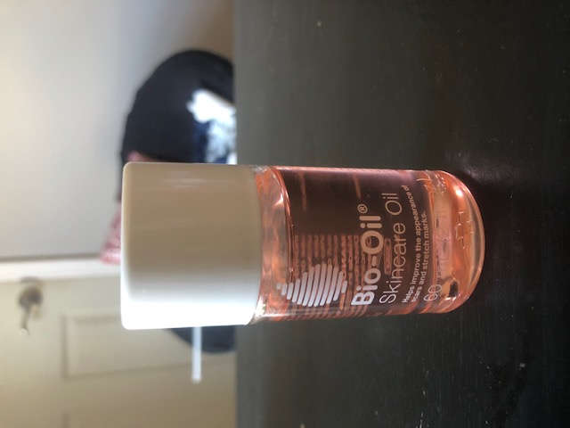
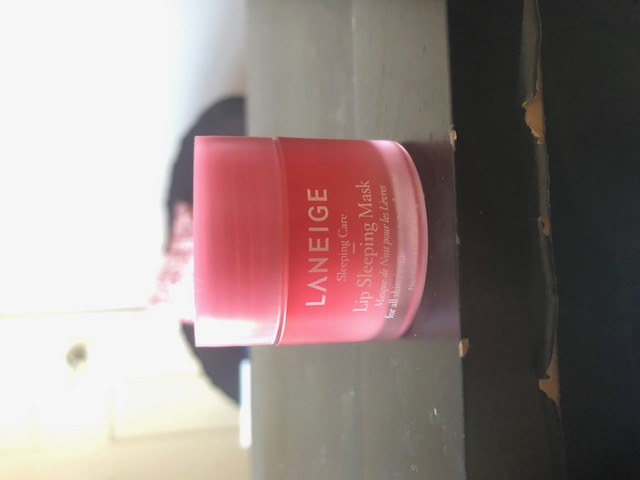

I wanted to share my skincare journey and the products that I have found to helpful to help clear my acne, acne scars, and dark spots. To find the products that work for me, it was all about researching what skin type I have, trial and error of using skincare products, and taking note of the progress that my skin was making.
I want to share that investing in your skin is a form of self-care. It does not need to be extremely high-end products, but as long as you find skincare products that work for your skin type, that is all that matters! I encourage you to find what works for you!
Below you will find pictures of the products that I use. These products are a mix of affordable to a bit high end products. These are products that I use for my morning and nighttime skincare routine. Some of these products I use specifically for my morning or nighttime routine.
My Skincare Morning and Night Routine
This is what I apply in the morning in this order:
- The INKEY List’s Salicylic Acid Cleanser
- Dior’s Hydra Life Micellar Milk No Rinse Cleanser
- Dior’s Hydra Life Pores Away Pink Clay Mask (twice or three times a week)
- TONYMOLY Poresol Ampoule Serum
- The INKEY List’s Caffeine Eye Cream
- Dior’s Hydra Life Fresh Hydration Sorbet Crème
- Bio-Oil’s Skincare Oil
This is what I apply in the night in this order:
- The INKEY List’s Salicylic Acid Cleanser
- Dior’s Hydra Life Micellar Milk No Rinse Cleanser
- TONYMOLY Poresol Ampoule Serum
- The INKEY List’s Beta Hydroxy Acid (BHA) Serum*
- The INKEY List’s Retinol Cream *
- The INKEY List’s Caffeine Eye Cream
- Dior’s Hydra Life Fresh Hydration Sorbet Crème
- Bio-Oil’s Skincare Oil
- LANEIGE’s Berry Lip Sleeping Mask
*Note: These are products that I use every other night. The reason for this is because you cannot combine these two together because it will give a negative reaction to your skin. It is safer to use these products on separate nights. I use the retinol cream two to three times a week because my skin is still on the younger side to be using retinol cream every night.
Below you will find pictures of the products that I use. These products are a mix of affordable to a bit
high end products. These are products that I use for my morning and nighttime skincare routine. Some of these
products I use specifically for my morning or nighttime routine.
*** All photos were taken by me***
 




 



Skincare Products Info
First Photo
Picture of three skincare products. From left to right: The INKEY List’s Salicylic Acid Cleanser, Dior’s Hydra Life Micellar Milk No Rinse Cleanser, TONYMOLY Poresol Ampoule Serum
Second Photo
Picture of two skincare products. From left to right: The INKEY List’s Beta Hydroxy Acid (BHA) Serum, The INKEY List’s Retinol Cream
Third Photo
Picture of one skincare product. The INKEY List’s Caffeine Eye Cream
Fourth Photo
Picture of one skincare product. Dior’s Hydra Life Pores Away Pink Clay Mask
Fifth Photo
Picture of one skincare product. Dior’s Hydra Life Fresh Hydration Sorbet Crème
Sixth Photo
Picture of one skincare product.Bio-Oil’s Skincare Oil
Seventh Photo
Picture of one skincare product. LANEIGE’s Berry Lip Sleeping Mask